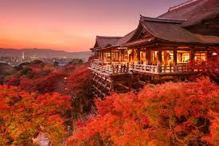

🍁 Paisagens outono 🍁
Outono no Japão

Assim como na primavera, a conhecida floração das cerejeiras (sakura) se torna um dos principais destaques com a tradição de apreciá-la (hanami), no outono a mudança de cores das folhas do verde para o vermelho, chamada de kōyō, se torna uma das principais atrações.